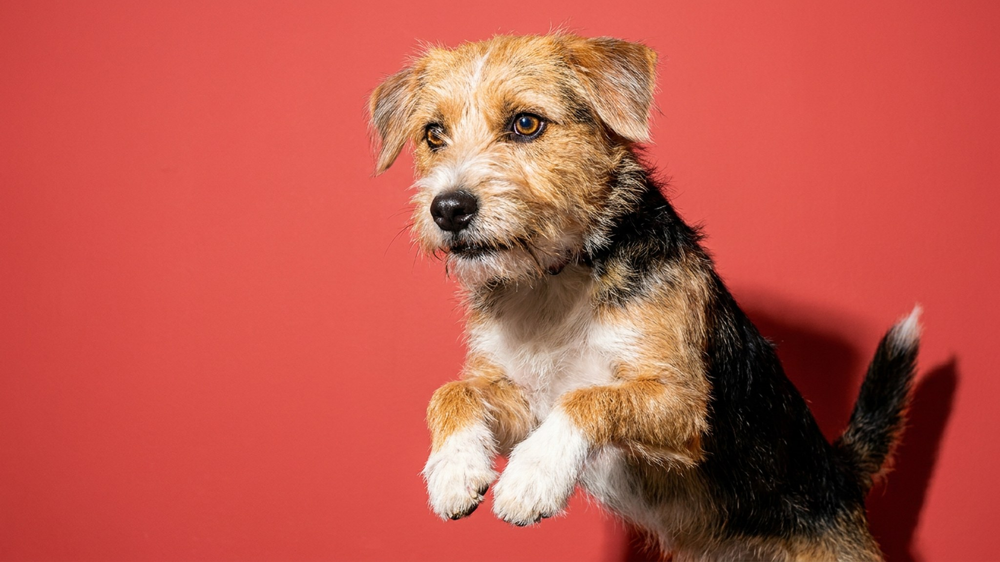

Кошка в 6 утра орёт на всю квартиру. Собака третий раз за неделю разбирает подушку. Стандартный вывод — избалован или нервный. Реальная причина часто другая: питомец тратит на еду 30 секунд из 24 часов, и мозгу больше нечем заняться. Миска-головоломка и поиск еды меняют это — без дрессуры и лишних затрат.
«Enrichment» — обогащение среды — это создание для питомца условий, при которых ему нужно думать, искать и решать задачи. Еда здесь главный инструмент: это то, что мотивирует любое животное без дополнительного обучения.
В природе кошка тратит несколько часов на охоту, собака — на поиск пищи по запаху. Домашний питомец получает полную миску за секунды. Мозг остаётся без нагрузки — и ищет её сам: портит вещи, требует внимания, устраивает концерты.
Поиск еды задействует нюх, лапы, терпение и концентрацию. После такой «работы» питомец устаёт — приятно и продуктивно. Хозяин замечает это как снижение деструктива и общую спокойность.
🐾 Не уверены, что это опасно?
Опишите симптом в AnimaLife — AI-ветеринар за минуту подскажет, что в пределах нормы, а когда пора к врачу.
Это полезно любому домашнему питомцу, но есть категории, где эффект максимален:
Промышленные головоломки удобны, но вовсе не обязательны. Вот что работает из того, что есть дома:
Кошкам ещё хорошо подходит кормление по принципу «охота»: несколько маленьких порций в разных местах квартиры вместо одной миски в одном углу.
Первая ошибка — сразу дать сложную головоломку голодному животному. Оно не поймёт, что делать, разочаруется и уйдёт.
Правильная последовательность:
Не нужно переводить все приёмы пищи в «поиск» сразу. Достаточно одного кормления в день. Для питомцев с непривычки хватает 5–10 минут «работы».
🐾 Питомец ведёт себя странно?
AnimaLife расшифрует поведение кошки и собаки и подскажет, что делать. Попробуйте бесплатно прямо в мессенджере.
🐾 Понравился разбор?
Подпишитесь на канал — каждый день разбираем по одному тревожному симптому у кошек и собак: что в пределах нормы, а когда пора к врачу. Подпишитесь, чтобы не пропустить разбор, который может спасти здоровье вашего питомца.
Материал носит информационный характер и не заменяет очную консультацию ветеринара.